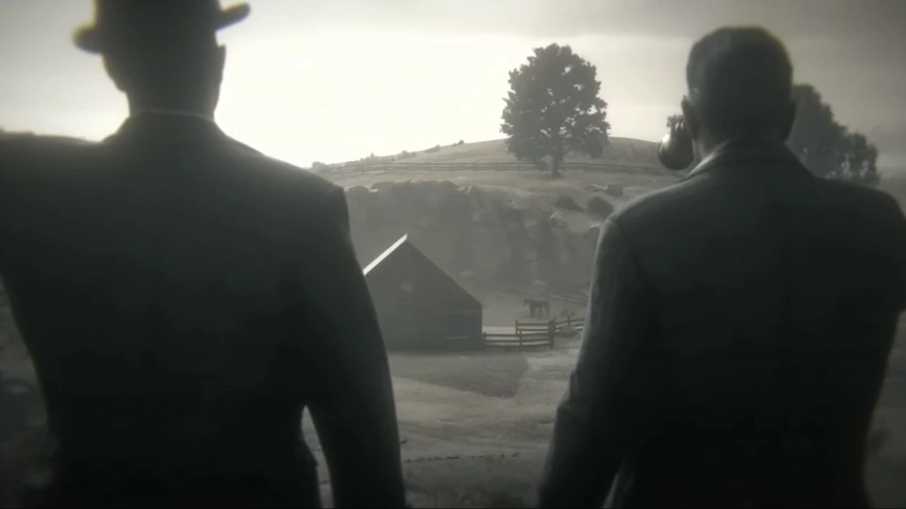
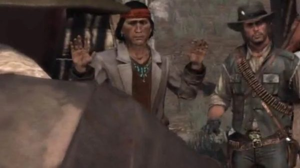
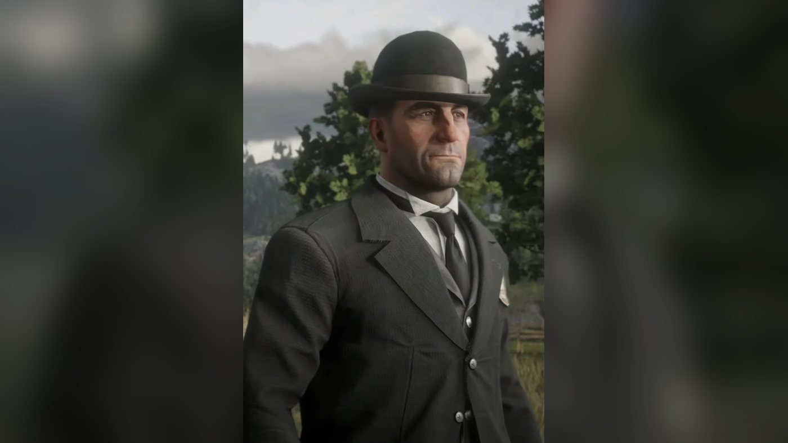
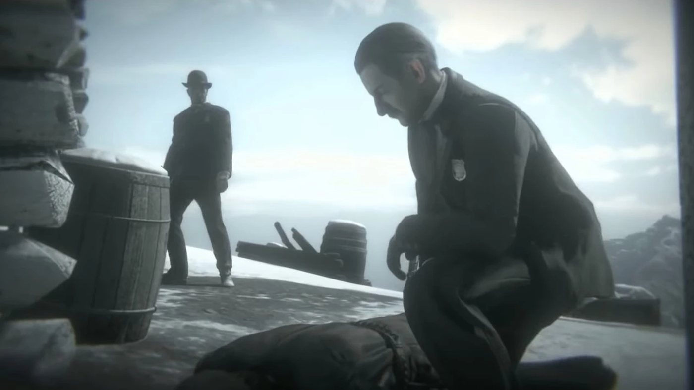
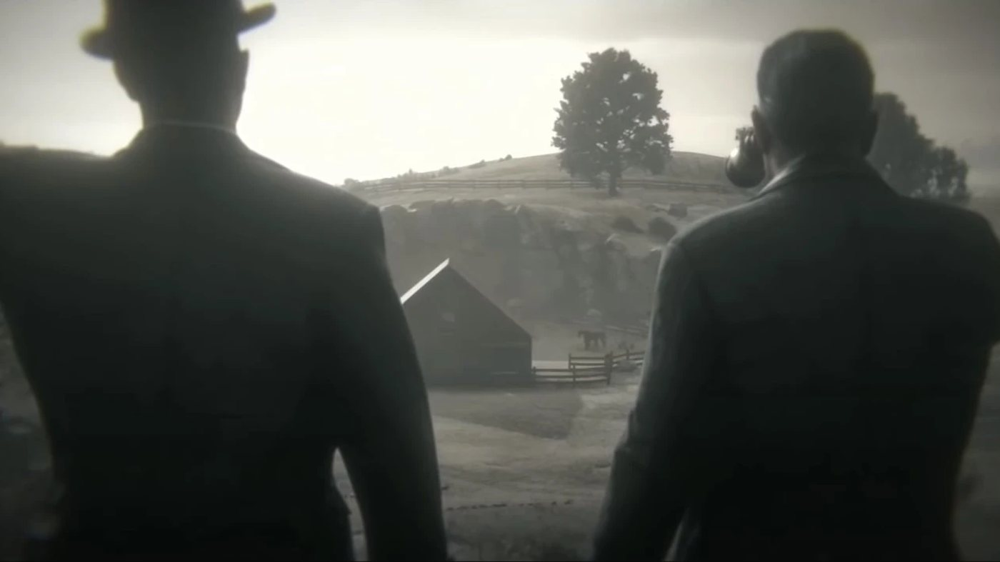
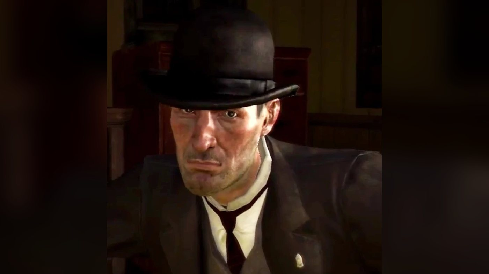
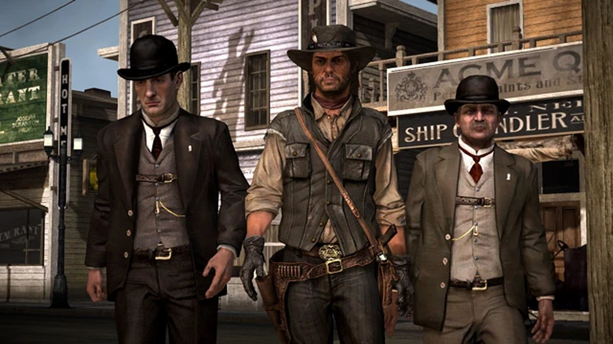
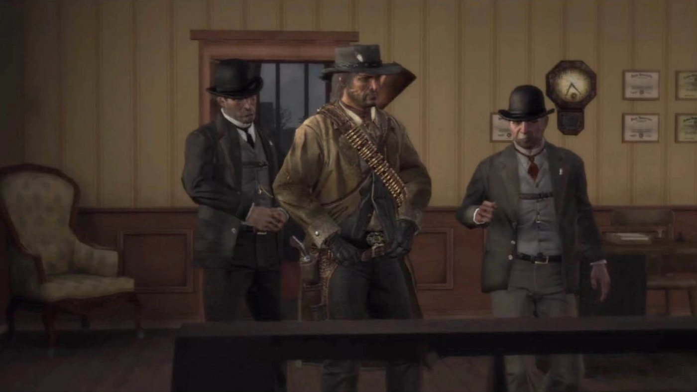
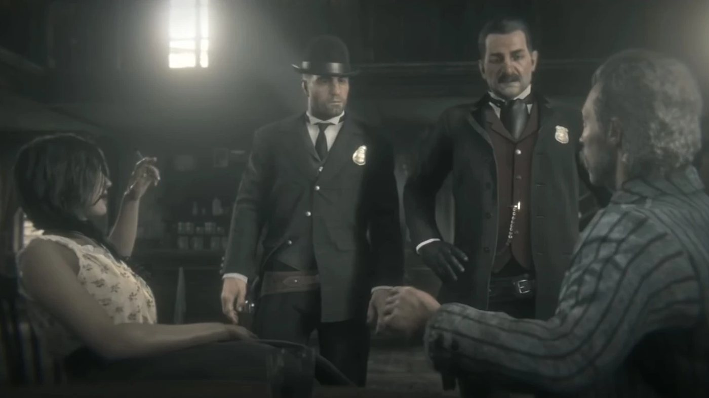

Personnage · Bureau of Investigation
Archer Fordham
Archer Fordham est un agent du Bureau of Investigation placé sous les ordres d'Edgar Ross. Il apparaît dans Red Dead Redemption (2010), dont l'action se déroule en 1911, et revient dans le générique de fin de Red Dead Redemption 2 (2018), situé en 1907. Ross et lui y découvrent le corps de Micah Bell sur le mont Hagen, interrogent des témoins à Valentine et près de Rhodes, et finissent par observer John Marston et son fils Jack à Beecher's Hope.
En 1911, tandis que le Bureau retient la femme et le fils de John, Fordham et Ross le mettent dans le train pour Armadillo, récupèrent Javier Escuella de ses mains à la frontière, puis traquent avec lui Dutch van der Linde dans West Elizabeth, jusqu'à la mort de Dutch à Cochinay. Il a la voix de David Wilson Barnes.
- Nom
- Archer Fordham
- Naissance
- Non précisée dans les jeux
- Sort
- Inconnu après 1911 ; d'après le Red Dead Wiki anglophone, il peut être abattu à Beecher's Hope (le wiki francophone le dit absent)
- Activité
- Agent du Bureau of Investigation
- Supérieur
- Edgar Ross
- Famille
- Maybelle Fordham, sa mère, morte en 1900 (Red Dead Wiki)
- Région
- West Elizabeth (Blackwater) ; la frontière du New Austin
- Armes
- Cattleman Revolver, High Power Pistol, Winchester Repeater (Red Dead Wiki)
- Jeux
- Red Dead Redemption (2010) ; Red Dead Redemption 2 (2018, générique de fin)
- Voix
- David Wilson Barnes (Red Dead Redemption)
Biographie
Origines
Archer Fordham est un agent du Bureau of Investigation qui travaille sous les ordres d'Edgar Ross. Les jeux ne lui donnent ni date ni lieu de naissance, et ne montrent jamais comment il est entré au Bureau. Le Red Dead Wiki anglophone affirme qu'il l'a rejoint en 1907, l'année de sa fondation, et le présente comme le protégé de Ross ; le wiki francophone se contente de dire qu'il y est entré avant 1907. Dans Red Dead Redemption 2, les journaux de la période de l'épilogue annoncent la création du Bureau et la nomination de Ross à sa tête (voir la fiche d'Edgar Ross).
D'après le Red Dead Wiki, sa mère, Maybelle Fordham, est morte le 24 juillet 1900 et repose au cimetière de Blackwater. Les jeux n'en disent pas plus sur sa famille. Fordham n'apparaît pas dans les chapitres de 1899 de Red Dead Redemption 2, où Ross travaille pour l'agence de détectives Pinkerton aux côtés d'Andrew Milton. Dans la chronologie de l'histoire, sa première apparition se situe dans le générique de fin de 1907.
Red Dead Redemption 2 : l'épilogue (1907)
Épilogue II : Beecher's Hope
Dans "American Venom", la dernière mission de l'épilogue, John Marston, Sadie Adler et Charles Smith atteignent la cachette de Micah Bell au mont Hagen, où Dutch van der Linde tire sur Micah avant que John ne l'achève. Fordham apparaît dans le générique de fin qui suit, toujours aux côtés de Ross. Le Red Dead Wiki situe ces scènes en juin 1907, d'après une lettre du maire de Saint-Denis reçue pendant l'épilogue. Le wiki ne propose aucune transcription du générique. Dans leur première scène, les deux agents montent jusqu'à la cachette et trouvent le corps de Micah face contre terre, près de la cabane. Selon la page du Red Dead Wiki consacrée au générique, Ross charge Fordham de fouiller la cabane pendant qu'il examine le corps. Fordham entre, et Ross s'accroupit près du corps, le soulève puis le repose. Fordham ressort en haussant les épaules, et ils repartent.
D'autres scènes du générique suivent les deux agents à travers la région. Au Smithfield's Saloon de Valentine, le barman les oriente vers deux clients, une femme et le commissaire-priseur Morris Peyton, qu'ils interrogent avant de repartir. Près de Rhodes, ils arrêtent une diligence et parlent à son cocher ; une légende du Red Dead Wiki précise que Ross remet sa carte à l'un des passagers. Leur dernière scène se déroule à Beecher's Hope, le ranch de John : John brosse un cheval avec son fils, Jack, dans l'enclos. De loin, Ross et Fordham les observent aux jumelles, échangent un signe de tête et s'en vont.
Red Dead Redemption (1911)
En 1911, Fordham est en poste à Blackwater, dans l'État de West Elizabeth, avec Ross, dont le bureau occupe l'étage du poste de police. Avant le début du jeu, le Bureau a enlevé à Beecher's Hope la femme de John, Abigail, et son fils, Jack. Il les retient pour obliger John à traquer les anciens membres de la bande de Van der Linde. Les jeux ne montrent ni l'enlèvement ni le rôle qu'y a joué Fordham.
Acte I : New Austin
Le jeu s'ouvre sur "Exodus in America". John descend du ferry Morningstar à Blackwater, encadré par deux hommes qui lui font traverser la ville jusqu'à la gare et le mettent dans un train pour Armadillo, au New Austin. La transcription parle de deux hommes de loi ; la page de la mission les identifie comme Ross et Fordham. À Armadillo, un guide nommé Jake explique à John que le marshal de la ville, Leigh Johnson, l'a engagé après avoir reçu un télégramme de quelques huiles de Blackwater qui réclamaient un guide. La première cible de John est Bill Williamson, dont la bande tient Fort Mercer. Fordham ne reparaît pas de tout le premier acte.
Acte II : Nuevo Paraíso
Bill s'enfuit au Mexique, où vit aussi Javier Escuella. À la fin de "The Gates of El Presidio", John capture Javier ou le tue, selon le choix du joueur. Il retrouve ensuite Ross et Fordham près du pont de la frontière, où ils l'attendent avec une automobile. Si Javier est vivant, Fordham félicite John, annonce à Javier qu'il va découvrir jusqu'où s'étend le bras de la justice et lui ordonne de monter en voiture. Quand John demande si l'un de ses engagements est enfin rempli, Fordham répond que rien n'est réglé tant qu'il n'a pas honoré ses obligations.
Si John ramène le corps de Javier, Fordham lui lance un regard déçu, fait remarquer que l'homme n'a pas l'air en très bonne santé et lui rappelle qu'on lui avait demandé de les garder en vie. John rétorque qu'ils devraient déjà s'estimer heureux de l'avoir. Fordham ouvre la portière, enjoint à John de se souvenir de ses obligations envers le gouvernement, puis la referme une fois que John a jeté le corps sur la banquette arrière. Dans les deux cas, Fordham lui demande de retrouver Williamson, puis de rentrer à Blackwater au plus vite, car le Bureau pense que Dutch van der Linde se trouve dans la région. Ross ajoute que la femme de John lui transmet ses amitiés, et les agents repartent avec Javier. Abraham Reyes n'assiste pas à cette rencontre.
Acte III : West Elizabeth
Après la mort de Bill près d'Escalera, John se présente au poste de police de Blackwater dans "Bear One Another's Burdens". À l'étage, Fordham l'accueille et lui demande s'il a fait bon voyage. John exige de voir sa femme et son fils ; Fordham assure qu'on s'occupe bien d'eux et que Ross veut lui parler d'événements importants. Quand John menace de lui tirer une balle dans la tête sur-le-champ, Fordham lui demande de se calmer. Ross prend le relais et explique que le marché couvre tous les hommes de l'ancienne bande, Dutch compris. Fordham précise que Dutch se terrerait avec un groupe de renégats près de l'épave du Serendipity, un ancien bateau fluvial. Les trois hommes partent dans l'automobile des agents, Fordham au volant.
En route, Fordham ressert à Ross une maxime qu'il lui prête, sur les gros enjeux et la nécessité de jouer finement, et Ross répond qu'il ne s'imagine pas avoir jamais dit une chose aussi banale. Fordham juge John trop borné pour apprécier la chance qu'on lui offre, et lui ordonne de surveiller son langage quand John l'insulte. Quand John demande où tout cela s'arrêtera, Fordham répond que cela s'arrêtera quand les agents le décideront, et que John n'est pas en position d'exiger quoi que ce soit. Il lui explique que le bétail voyage désormais surtout par le train et lui lance qu'il ne vient de nulle part, puis avoue ne pas comprendre les gens de son espèce, qui refusent les fruits du progrès par fidélité à une époque déjà oubliée. John rétorque que l'alternative consiste à jouer les gens qu'on n'est pas, à travailler dans un bureau et à recevoir des ordres de costumes-cravates qui n'ont jamais mis les pieds à l'est de Chicago.
Ross reste près de la voiture, sur la falaise qui domine l'épave, pendant que Fordham et John descendent à pied. Fordham ordonne à John de lui obéir, fixe le plan (abattre Dutch vite et repartir) et le prévient des conséquences s'il sort du rang. L'épave est silencieuse. Fordham se demande si Dutch n'a pas eu vent de l'opération et lâche que l'informateur a intérêt à ne pas leur avoir menti. Il remarque que l'endroit grouille d'ordinaire de voyous, entend un bruit et envoie John voir à l'étage pendant qu'il attend en bas. John découvre un homme ligoté sur un pont supérieur, un sac sur la tête selon la page de la mission. Fordham reconnaît l'informateur du Bureau, Nastas, qui les prévient qu'il s'agit d'un piège. Les hommes de Dutch les encerclent. Fordham demande à John de porter Nastas, qui, à son avis, ne tiendra pas sur ses jambes.
Une fois les assaillants abattus, Fordham ouvre la route jusqu'à la voiture. À bord, il explique à Ross que c'était un piège, que l'homme est l'informateur et qu'il parle anglais ; Ross lui reproche son insolence. John se moque d'un plan qui envoie deux hommes contre toute une bande, dont l'un est un simple gratte-papier, et Fordham lui ordonne de se taire. Le moteur lâche alors. Ross traite Fordham d'imbécile et lui ordonne de réparer pendant que John et lui repoussent les cavaliers de Dutch. Fordham parvient à faire repartir la voiture. Sur le chemin du retour, Ross met la panne sur le compte de sa conduite, et Fordham répond qu'il tentait d'échapper à une embuscade.
Ross décide de confier Nastas à Harold MacDougal. À Blackwater, Fordham présente à John le bureau du professeur, un anthropologue renvoyé de Yale qui aide les agents dans leurs rapports avec les Amérindiens de la région. Il demande à John de l'aider à porter Nastas, promet un médecin à MacDougal et le charge de découvrir ce que Nastas sait de Dutch, en ajoutant qu'il a intérêt à y parvenir.
Dans "Great Men are Not Always Wise", un informateur prévient Ross que Dutch s'apprête à rendre visite au directeur de la banque de Blackwater. Fordham propose de se poster sur un toit qui lui fait face ; de là, John abat les membres de la bande à mesure qu'ils sortent. Ross envoie ensuite John à l'intérieur avec deux hommes de loi, Dell Hopkins et Benton Manning. Dutch abat une otage, l'employée de banque Muriel Scranton, et s'échappe. Au moment où la troupe se met en selle, Fordham annonce que Dutch a filé en automobile avec le directeur de la banque, puis demande à John si Dutch a changé. Quand John demande si les agents sont des hommes de loi ou des militaires, Fordham répond qu'ils ne sont ni l'un ni l'autre, et Ross ajoute qu'il a autorité sur les deux.
La troupe retrouve la voiture de Dutch en flammes au bord de la route, le corps du directeur à côté selon la page de la mission, et affronte les membres de la bande postés plus loin, à Bearclaw Camp d'après la même page. Dutch s'échappe. Le numéro 60 du Blackwater Ledger rend compte des faits sous le titre "Bank Robbery Foiled by Government Agents" (braquage déjoué par des agents du gouvernement). Il situe le second affrontement "at an old logging camp at Broken Tree" (dans un ancien camp de bûcherons à Broken Tree), ce que la page de la mission tient pour une erreur, et ne nomme aucun agent. Il rapporte qu'"a spokesperson for federal agents assigned to Blackwater hailed this as an important victory over 'the primitive and unprincipled forces that seek to undermine the freedoms and safety of the great American people.'" (un porte-parole des agents fédéraux affectés à Blackwater a salué une victoire importante sur "les forces primitives et sans principes qui cherchent à saper les libertés et la sécurité du grand peuple américain"). Sa rubrique Miscellany annonce que le directeur de la banque, Harmon Weinstein, "has been found dead near Broken Tree" (a été retrouvé mort près de Broken Tree).
Dans "And You Will Know The Truth", John trouve les agents en train de préparer leurs armes dans le bureau. Quand Ross lui reproche son échec, Fordham traite John de danger public et regrette qu'on ne l'ait pas fait tuer. Pendant le discours de Ross sur la civilisation, Fordham qualifie Dutch d'assassin et demande quelle serait l'alternative aux règles. Les trois hommes quittent ensuite Blackwater à bord d'un véhicule armé d'une mitrailleuse, que John manie. En chemin, Fordham vante les progrès des forces armées, présente le véhicule comme un simple prototype et évoque ce qui se prépare en Virginie. Ross explique que l'armée a installé un camp hors de la ville et fait savoir qu'on y entrepose de grandes réserves de munitions et de vivres. Fordham ajoute que la bande de Dutch a sans cesse besoin de se ravitailler, et que l'appât devrait donc l'attirer. Les hommes de Dutch attaquent le camp et sont repoussés.
Le véhicule se lance ensuite à leur poursuite hors de la route. Ross demande à Fordham s'il peut le tenir droit, et Fordham répond qu'il fait de son mieux. Il signale un chariot lancé droit sur la cavalerie ; John le détruit. Une explosion déclenchée par la bande renverse ensuite le véhicule. D'après la page de la mission, John, Ross et Fordham s'en tirent légèrement blessés.
"And The Truth Will Set You Free" suit immédiatement. En se relevant, Fordham traite Dutch de fou. Il chevauche ensuite avec Ross, John et un détachement de cavalerie mené par un capitaine jusqu'au fort de Dutch, à Cochinay. D'après la page de la mission, les conversations entendues pendant la chevauchée dépendent de la place de John dans la colonne. Fordham peut alors lancer à John que voilà ce qui arrive quand on fraie avec des "sauvages", et lui demander comment il a pu suivre un tel homme ; John lui retourne la question à propos de Ross. Fordham traite Dutch de psychopathe, d'assassin et de violeur, demande à John ce qui l'a rendu ainsi, prévient John qu'il y a toujours quelqu'un pour observer et que le Bureau l'a observé, lui reproche d'avoir couru le Mexique au lieu de simplement tuer Bill à Fort Mercer, et suggère que sa femme pourrait toujours aller travailler.
À Cochinay, Fordham est avec les assaillants quand les soldats font sauter la porte extérieure, et les pousse à l'attaque. John continue ensuite seul pour affronter Dutch, qui jette son arme au bord d'une falaise et se laisse tomber dans le vide. Au pied de la falaise, Ross tire dans le corps avec l'arme de John, pour son rapport, et annonce à John que sa famille a été renvoyée à Beecher's Hope. Fordham remercie John pour tout, reconnaît que cela n'a pas été facile et lui dit qu'il a fait honneur à son pays. Ross appelle ensuite Archer à le suivre, et les agents laissent John rentrer chez lui.
Quelque temps après le retour de John, dans "The Last Enemy That Shall Be Destroyed", des soldats et des hommes de loi menés par Ross attaquent Beecher's Hope. Uncle est tué, Abigail et Jack s'enfuient sur un seul cheval, et John tombe sous les balles d'un peloton d'exécution devant la porte de la grange. La transcription ne nomme pas Fordham. D'après le Red Dead Wiki anglophone, on aperçoit Fordham parmi les hommes qui font face à John entre les portes de la grange de Beecher's Hope en 1911 (il peut être abattu pendant le Dead Eye final et disparaître de la cinématique qui suit) ; le wiki francophone affirme qu'il ne participe pas à la mission (voir Anecdotes).
Red Dead Redemption : 1914
Fordham n'apparaît pas dans la partie du jeu située en 1914, quand Jack retrouve Ross à la retraite, et, d'après le Red Dead Wiki, aucun personnage ne parle de lui. Le Blackwater Ledger & Sentinel n° 213, qui annonce le départ à la retraite de Ross, ne le nomme pas davantage. Il attribue à Ross seul le mérite d'avoir mis fin aux troubles amérindiens de la région et d'avoir éliminé quelques-uns des criminels les plus recherchés et les plus dangereux de l'Ouest : "including Bill Williamson, Dutch van Der Linde, Javier Esquella and John Marston" (dont Bill Williamson, Dutch van der Linde, Javier Escuella et John Marston, l'orthographe "Esquella" étant celle du journal). Les jeux ne disent rien du sort de Fordham après 1911.
Personnalité
Le Red Dead Wiki cite la description de Fordham donnée par le guide de l'édition Game of the Year de Red Dead Redemption : "Archer is a young, sturdy, and keen-eyed government agent. He is Ross's right-hand man and he is very ambitious and aggressive." (Archer est un agent du gouvernement jeune, solide et à l'œil vif. Bras droit de Ross, il est très ambitieux et agressif). Dans le jeu, il donne souvent du "sir" à Ross et approuve ses propositions. Avec John, il s'en tient le plus souvent à monsieur Marston, passe à Marston tout court pour les ordres et les insultes, et ne l'appelle John qu'une fois, au pont de la frontière, quand Javier a été capturé.
Il menace John à plusieurs reprises. Il défend les méthodes du Bureau et le progrès de son époque : l'automobile, le bétail qui voyage par le train, les nouvelles armes de l'armée. Il tient Dutch van der Linde pour un fou et un psychopathe, et parle de "sauvages" quand il demande à John comment il a pu suivre un tel homme (voir la biographie).
Dans ses propres mots
Sur la route de l'épave du Serendipity, dans "Bear One Another's Burdens" : "I don't understand you people. The trappings of progress are here for the taking and you're too stubborn to take them." (je ne vous comprends pas, vous autres. Les bienfaits du progrès sont à portée de main et vous êtes trop têtus pour les saisir). En quittant Blackwater à bord du véhicule armé, dans "And You Will Know The Truth" : "Our armed forces have no equal. We have made incredible progress the past few years." (nos forces armées n'ont pas d'égal. Nous avons fait des progrès incroyables ces dernières années). Puis, à propos du véhicule : "And this isn't much more than a simple prototype. You should see what they're working on in Virginia. Soon there will be no war we can't win." (et ce n'est guère plus qu'un simple prototype. Vous devriez voir ce qu'ils préparent en Virginie. Bientôt, il n'y aura plus une guerre que nous ne puissions gagner). En route vers Cochinay, dans "And The Truth Will Set You Free" : "There's always somebody watching, Mr. Marston. I thought you'd have gleaned that much by now." (il y a toujours quelqu'un qui observe, monsieur Marston. Je pensais que vous l'aviez compris, depuis le temps).
Noms
La liste des interprètes de la notice de Red Dead Redemption le nomme Archer Fordham, et le Red Dead Wiki l'appelle l'agent Archer Fordham. Ross l'appelle "Mr. Fordham" ou simplement Fordham, parle de lui comme de l'"Agent Fordham" quand il envoie John le suivre à pied jusqu'à l'épave, et emploie deux fois son prénom, "Archer" : quand il dit que lui et Archer sont les méchants de l'histoire, et quand il l'emmène loin du pied de la falaise de Cochinay. Harold MacDougal le salue d'un "Mr. Fordham". Dans l'automobile, John présente l'un des deux hommes envoyés sur l'épave comme "an office clerk or social secretary or some such" (un employé de bureau, un secrétaire mondain ou quelque chose du genre).
Apparence
Fordham a les cheveux sombres et le visage rasé de près. En 1907, il porte un costume trois pièces anthracite, une chemise blanche, une cravate noire et un chapeau melon. Dans Red Dead Redemption (1911), son costume trois pièces est brun et sa cravate rouge sombre. D'après le Red Dead Wiki, il dépasse Ross d'une bonne tête dans Red Dead Redemption.
Relations

Edgar Ross
Fordham est le subordonné de Ross au Bureau of Investigation, à ses côtés dans presque toutes ses scènes, de 1907 à 1911 (voir la biographie). Il lui sert de chauffeur et le soutient face à John. Ross le rabaisse souvent, de la maxime qu'il refuse d'avoir inventée à la panne de voiture qu'il lui impute, mais le range dans son camp quand il explique à John que ce sont eux deux qui font respecter les règles.

John Marston
Fordham est l'un des deux agents qui contraignent John à traquer son ancienne bande en 1911, et c'est lui qui lui donne l'essentiel de ses ordres sur le terrain (voir la biographie). Leurs échanges restent hostiles de part et d'autre jusqu'à la mort de Dutch, où Fordham le remercie. Il l'avait déjà observé à Beecher's Hope avec Ross en 1907. D'après le Red Dead Wiki anglophone, on aperçoit Fordham parmi les hommes qui font face à John entre les portes de la grange de Beecher's Hope en 1911 (il peut être abattu pendant le Dead Eye final et disparaître de la cinématique qui suit) ; le wiki francophone affirme qu'il ne participe pas à la mission.

Abigail Marston
Le Bureau retient Abigail pendant que John travaille pour lui ; Fordham ne la croise jamais à l'écran. Il élude les questions de John à son sujet et, sur la route de Cochinay, lance une pique sur la possibilité de l'envoyer travailler (voir la biographie).

Jack Marston
Dans le générique de 1907, Fordham et Ross observent Jack et son père à Beecher's Hope (voir la biographie). En 1911, le Bureau retient Jack avec sa mère jusqu'à la mort de Dutch.

Micah Bell
Fordham ne le croise jamais vivant : il fouille la cabane de Micah sur le mont Hagen en 1907, pendant que Ross examine le corps (voir la biographie).

Javier Escuella
Fordham prend Javier en charge près du pont de la frontière, après El Presidio, vivant ou mort selon le choix du joueur, et n'accueille pas les deux issues de la même façon (voir la biographie).

Bill Williamson
Fordham ne rencontre jamais Bill, la première cible que le Bureau assigne à John ; il lance John à sa poursuite depuis la frontière, puis, sur la route de Cochinay, reproche à John d'avoir couru le Mexique au lieu d'abattre Bill à Fort Mercer (voir la biographie).

Dutch van der Linde
Dutch est la cible de toute la part que prend Fordham à la traque de 1911, de l'épave du Serendipity à Cochinay, mais les deux hommes ne se retrouvent jamais face à face (voir la biographie). Fordham parle d'abord de lui sans animosité : il annonce à John, à la frontière, que "Dutch van der Linde is in the area" (Dutch van der Linde est dans la région), en fait la priorité en descendant vers l'épave et demande à John si Dutch a changé. Plus tard, sur la route de Cochinay, il le traite de psychopathe, d'assassin et de violeur. John lui répond que Dutch a été un homme bien, bien meilleur que lui (voir Citations).

Nastas
Pour Fordham, Nastas est l'informateur du Bureau sur la bande de Dutch ; il le reconnaît sur l'épave du Serendipity et le présente à Ross (voir la biographie).

Harold MacDougal
Le professeur aide les agents dans leurs rapports avec les Amérindiens de la région ; Fordham le présente à John et lui confie Nastas, blessé (voir la biographie).
Armes et automobile
Armes
Le Red Dead Wiki lui attribue trois armes : un Cattleman Revolver, un High Power Pistol et une Winchester Repeater. Selon le même wiki, il porte le Cattleman Revolver dans ses premières missions, puis le High Power Pistol, comme Ross. La page de "Great Men are Not Always Wise" précise que Ross et Fordham se servent de la Winchester Repeater, quand les shérifs et marshals de la mission ont la Repeater Carbine, plus ancienne.
Au volant
Fordham sert de chauffeur aux agents : il tient le volant de l'automobile dans "Bear One Another's Burdens" et celui du véhicule armé dans "And You Will Know The Truth" (voir la biographie). La page de "Bear One Another's Burdens" indique qu'il remet en route à la manivelle la voiture calée. Elle relève aussi qu'il peut la démarrer au contact sans quitter son siège, ce que peu de voitures permettaient à l'époque.
Côté jeu
Trois de ses missions échouent si John l'agresse ou le tue (conditions détaillées dans le tableau des missions). D'après le Red Dead Wiki anglophone, on aperçoit Fordham parmi les hommes qui font face à John entre les portes de la grange de Beecher's Hope en 1911 (il peut être abattu pendant le Dead Eye final et disparaître de la cinématique qui suit) ; le wiki francophone affirme qu'il ne participe pas à la mission. La page de "The Last Enemy That Shall Be Destroyed" précise que Ross, lui, ne peut pas y être tué.
Missions
Fordham apparaît dans six missions principales de Red Dead Redemption, numérotées 1, 40, 42, 43, 47 et 48 dans l'ordre de l'histoire, et n'en confie aucune. Les quatre dernières appartiennent à la série d'Edgar Ross, qui ouvre la partie West Elizabeth du jeu et se clôt sur la mort de Dutch van der Linde. Le Red Dead Wiki anglophone, contrairement au wiki francophone, le place aussi dans la dernière mission principale, la 57e. Dans Red Dead Redemption 2, il n'apparaît que dans le générique de fin qui suit "American Venom".
Apparitions
| Mission | Acte | Rôle de Fordham |
|---|---|---|
| Exodus in America | Acte I : New Austin | Escorte John avec Ross du ferry de Blackwater jusqu'au train pour Armadillo (nommé par la page de la mission ; la transcription parle de deux hommes de loi). Première mission du jeu. |
| The Gates of El Presidio | Acte II : Nuevo Paraíso | Attend avec Ross près du pont de la frontière et récupère Javier Escuella, vivant ou mort selon le choix du joueur. Donneur de mission : Abraham Reyes. Récompenses : 300 points de célébrité (350 avec la médaille d'or) et 125 d'honneur. |
| Bear One Another's Burdens | Acte III : West Elizabeth | Conduit Ross et John jusqu'à l'épave du Serendipity, la fouille avec John, identifie Nastas une fois que John l'a trouvé, et répare la voiture sous les balles. Donneur de mission : Edgar Ross. Récompenses : pistolet High Power, 150 points de célébrité (200 avec la médaille d'or) et 25 d'honneur. Échec si la voiture des agents est endommagée, ou si Ross, Fordham ou Nastas est agressé, tué ou abandonné aux hommes de Dutch. |
| Great Men are Not Always Wise | Acte III : West Elizabeth | Se poste avec Ross et John sur un toit face à la banque de Blackwater, puis participe à la poursuite de Dutch. Donneur de mission : Edgar Ross. Récompenses : 150 points de célébrité (200 avec la médaille d'or) et jusqu'à 225 d'honneur. Échec si Ross, Fordham ou un autre homme de loi est agressé ou tué. |
| And You Will Know The Truth | Acte III : West Elizabeth | Accompagne Ross et John dans le véhicule à mitrailleuse jusqu'au camp de l'armée, puis pendant la poursuite, jusqu'à ce qu'il se renverse. Donneur de mission : Edgar Ross. Récompense : 50 points de célébrité avec la médaille d'or. Échec si Ross ou Fordham est agressé ou tué. |
| And The Truth Will Set You Free | Acte III : West Elizabeth | Chevauche jusqu'à Cochinay avec Ross, John et l'armée, puis remercie John après la chute de Dutch. Donneur de mission : Edgar Ross. Récompenses : 500 points de célébrité (550 avec la médaille d'or) et 250 d'honneur. Dernière mission de la partie West Elizabeth. |
| The Last Enemy That Shall Be Destroyed | Acte III : West Elizabeth | D'après le Red Dead Wiki anglophone, on aperçoit Fordham parmi les hommes qui font face à John entre les portes de la grange de Beecher's Hope en 1911 (il peut être abattu pendant le Dead Eye final et disparaître de la cinématique qui suit) ; le wiki francophone affirme qu'il ne participe pas à la mission. Dernière mission principale du jeu. |
| Ending Credits | RDR2, épilogue II | Fouille la cabane de Micah Bell pendant que Ross examine le corps, interroge avec lui des témoins à Valentine et près de Rhodes, et observe John et Jack à Beecher's Hope. |
Citations
Les répliques ci-dessous sont citées dans leur version originale anglaise, suivies d'une traduction, et vérifiées sur les transcriptions du Red Dead Wiki. Le générique de Red Dead Redemption 2 n'a pas de transcription, et aucune réplique de Fordham n'en est tirée.
Red Dead Redemption
You've done well, Mr. Marston. Now, Javier here gets to see how far the hand of justice can reach.
The Gates of El Presidio (RDR1, acte II), si Javier est capturé. Traduction : « Beau travail, monsieur Marston. Javier, ici présent, va pouvoir constater jusqu'où s'étend le bras de la justice. »Unfortunately, nothing is cleared, John, until your obligations are met.
The Gates of El Presidio (RDR1, acte II), si Javier est capturé, quand John demande si l'un de ses engagements est rempli. Traduction : « Malheureusement, rien n'est réglé, John, tant que vous n'avez pas honoré vos obligations. »He's not looking very... healthy. We told you to keep them alive.
The Gates of El Presidio (RDR1, acte II), si Javier est tué. Traduction : « Il n'a pas l'air très... en forme. On vous avait dit de les garder en vie. »Mr. Marston, I ask you to calm down.
Bear One Another's Burdens (RDR1, acte III), quand John le menace dans le bureau de Blackwater. Traduction : « Monsieur Marston, je vous demande de vous calmer. »Like you always say, sir, the higher the stakes, the smarter you have to play the game.
Bear One Another's Burdens (RDR1, acte III), à Ross, sur la route de l'épave. Traduction : « Comme vous dites toujours, monsieur : plus les enjeux sont élevés, plus il faut jouer finement. »It ends when we say it ends. You're in no position to make demands.
Bear One Another's Burdens (RDR1, acte III), quand John demande où tout cela s'arrêtera. Traduction : « Ça s'arrêtera quand nous le déciderons. Vous n'êtes pas en position d'exiger quoi que ce soit. »Van der Linde is the priority. We go in, take him down and get the hell out of here. Quick and clean.
Bear One Another's Burdens (RDR1, acte III), en descendant vers l'épave. Traduction : « Van der Linde est la priorité. On entre, on l'abat et on fiche le camp d'ici. Vite et proprement. »It doesn't feel right. This place is usually teeming with lowlifes.
Bear One Another's Burdens (RDR1, acte III), sur l'épave déserte du Serendipity. Traduction : « Ça ne me dit rien de bon. D'habitude, l'endroit grouille de voyous. »I was trying to escape an ambush, sir.
Bear One Another's Burdens (RDR1, acte III), quand Ross met la panne sur le compte de sa conduite. Traduction : « J'essayais d'échapper à une embuscade, monsieur. »Marston, you're a public menace. We should've had you killed.
And You Will Know The Truth (RDR1, acte III), dans le bureau de Blackwater, après que Ross a reproché son échec à John. Traduction : « Marston, vous êtes un danger public. On aurait dû vous faire tuer. »See, this is what happens when you fraternize with savages. How could you ever follow a man like that?
And The Truth Will Set You Free (RDR1, acte III), sur la route de Cochinay. Traduction : « Voilà ce qui arrive quand on fraie avec des sauvages. Comment avez-vous pu suivre un homme pareil ? »It's time to kill these motherless bastards!
And The Truth Will Set You Free (RDR1, acte III), quand la porte de Cochinay saute. Traduction : « Il est temps de tuer ces fils de rien ! »Thank you, Mr. Marston, for everything. I know this wasn't easy for you, but I have to say, you've done your country proud.
And The Truth Will Set You Free (RDR1, acte III), ses derniers mots à John, après la mort de Dutch. Traduction : « Merci, monsieur Marston, pour tout. Je sais que ça n'a pas été facile pour vous, mais je dois dire que vous avez fait honneur à votre pays. »
Ce que les autres lui disent
You leave Dutch to me. We don't want you gettin' that suit dirty.
John Marston, Bear One Another's Burdens (RDR1, acte III), quand Fordham expose le plan. Traduction : « Laissez-moi Dutch. On ne voudrait pas que vous salissiez ce costume. »Perhaps if Mr. Fordham maneuvered it with a little more finesse.
Edgar Ross, Bear One Another's Burdens (RDR1, acte III), quand John se plaint de l'automobile. Traduction : « Peut-être que si M. Fordham la manœuvrait avec un peu plus de finesse. »I thought you were talkin' to Fordham.
John Marston, And You Will Know The Truth (RDR1, acte III), quand Ross le prévient qu'il n'y aura pas droit à l'erreur cette fois. Traduction : « Je croyais que vous parliez à Fordham. »Can't you hold this thing steady, Fordham?
Edgar Ross, And You Will Know The Truth (RDR1, acte III), pendant la poursuite hors de la route. Traduction : « Vous ne pouvez pas tenir ce machin droit, Fordham ? »Ross don't seem too different. Dutch was a good man once, a far better man than you.
John Marston, And The Truth Will Set You Free (RDR1, acte III), sur la route de Cochinay, quand Fordham traite Dutch de psychopathe. Traduction : « Ross n'a pas l'air bien différent. Dutch a été un homme bien, autrefois, bien meilleur que vous. »Come on, Archer, let's go find somebody else we can annoy.
Edgar Ross, And The Truth Will Set You Free (RDR1, acte III), après la mort de Dutch. Traduction : « Venez, Archer, allons trouver quelqu'un d'autre à embêter. »
Conception et interprétation
Le casting
La liste des interprètes imprimée dans la notice de Red Dead Redemption (2010) crédite David Wilson Barnes dans le rôle d'Archer Fordham, à côté de Jim Bentley pour Edgar Ross. L'article de Wikipédia consacré au jeu reprend ce crédit, et le Red Dead Wiki lui attribue la voix du personnage. Aucune des sources consultées ne lui prête la capture de mouvement. Nous n'avons trouvé aucun crédit d'interprète pour Fordham dans Red Dead Redemption 2 (2018) ; la liste des personnages du jeu sur Wikipédia ne le mentionne pas.
D'après Wikipédia, David Wilson Barnes était un acteur américain né le 30 octobre 1972 à San Diego, en Californie. Au cinéma, on l'a vu notamment dans Truman Capote (2005), The Company Men (2010), Jason Bourne : l'héritage (2012) et Le Pont des espions (2015) ; à la télévision, il a tenu des rôles récurrents dans les séries Hell on Wheels et The Son. Red Dead Redemption est le seul jeu vidéo de sa filmographie sur Wikipédia. Il est mort d'un cancer à New York le 30 juillet 2025, à 52 ans, une disparition rapportée par The Express le 1er septembre 2025.
Contenu coupé
Les fichiers de Red Dead Redemption contiennent une cinématique inutilisée, nommée fbi03. Ross s'y gausse de l'idée que des femmes puissent réclamer le droit de vote, et Fordham répond que sa Bessie le réclame ; Ross lui conseille de faire en sorte qu'elle reste sa Bessie, et non l'inverse. D'après le Red Dead Wiki, des sous-titres restés dans les fichiers de "The Last Enemy That Shall Be Destroyed" laissent deviner une version antérieure de la mission, dans laquelle Fordham devait tuer Rufus, le chien de la famille.
Les fichiers de Red Dead Redemption 2 renferment une version inutilisée de Fordham datée de 1899, avec gilet rouge, gants, pantalon et une autre coupe de cheveux. Le Red Dead Wiki relève que ce modèle porte un insigne Pinkerton, et y voit le signe qu'il devait d'abord apparaître avant l'épilogue en agent de la Pinkerton. Selon le même wiki, une cinématique du générique de fin devait le montrer avec Ross en train d'interroger des habitants et le shérif Hanley à Strawberry ; le wiki ajoute que Hanley n'est peut-être qu'un personnage provisoire dans les fichiers de cinématique.
Le Red Dead Wiki francophone signale une réplique inutilisée de passant, retrouvée dans les fichiers du jeu : "I hear that Bureau fella's never been the same since his mother got shot in the massacre" (il paraît que le type du Bureau n'est plus le même depuis que sa mère a pris une balle pendant le massacre). La réplique ne nomme ni Fordham ni le massacre en question. Ce wiki la rattache à Fordham et au massacre de Blackwater de 1899, rapprochement qu'il présente lui-même comme une simple possibilité.
Autres médias et postérité
Multijoueur
Fordham n'est pas un personnage jouable du multijoueur de Red Dead Redemption. Il ne figure ni parmi les quinze personnages de l'histoire ajoutés à l'Outfitter par le Liars and Cheats Pack, sorti le 21 septembre 2010, qui comprend Edgar Ross, ni parmi les huit du Myths and Mavericks Bonus Pack, gratuit, sorti le 13 septembre 2011. Les versions du jeu sorties sur PlayStation 4 et Nintendo Switch le 17 août 2023, puis sur PC le 29 octobre 2024, n'ont pas de mode multijoueur.
Red Dead Redemption 2
Red Dead Redemption 2, sorti le 26 octobre 2018, est une préquelle dont l'action se déroule en 1899 et en 1907. Fordham n'apparaît que dans son générique de fin, huit ans après sa première apparition dans Red Dead Redemption (18 mai 2010 en Amérique du Nord). Le Red Dead Wiki ne lui recense aucune apparition dans Red Dead Online ni dans Undead Nightmare.
Anecdotes
- Cinq des missions où apparaît Fordham tirent leur titre de la Bible, comme le relèvent leurs pages de mission : "Bear One Another's Burdens" (Galates 6:2), "Great Men are Not Always Wise" (Job 32:9), "And You Will Know The Truth" et "And The Truth Will Set You Free" (Jean 8:32), et "The Last Enemy That Shall Be Destroyed" (1 Corinthiens 15:26).
- D'après la page du Red Dead Wiki consacrée au générique de fin de Red Dead Redemption 2, Ross et Fordham portent tous deux un insigne Pinkerton dans leurs scènes de 1907, alors qu'un journal de l'épilogue annonce que Ross dirige désormais le Bureau of Investigation.
- D'après la page de la mission "Americans at Rest" (Red Dead Redemption 2, chapitre 2), la femme à qui Ross et Fordham parlent dans le saloon de Valentine pendant le générique est l'une des deux femmes avec qui Javier Escuella discute au bar dans cette mission.
- Les deux Red Dead Wiki ne s'accordent pas sur la présence de Fordham dans "The Last Enemy That Shall Be Destroyed". Le wiki anglophone le compte parmi les hommes postés devant la grange. Il signale aussi un marshal, Isaac McKinnon, qui a le physique et la tenue de Fordham, et qui se tient aux côtés de Ross dans la dernière cinématique ; on confond souvent les deux hommes, note-t-il. Le wiki francophone soutient que Fordham est absent de la mission et que l'homme aux côtés de Ross est McKinnon.
Galerie






